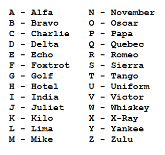

International
InternationalWritten as they sound
2012-05-20 | autor: flamenco108Czytam sobie taki artykuł z Pitmanii i popadłem w zadumę aka przydum. Faktycznie, w angielskim świecie działa X różnych stowarzyszeń, organizacji i prywatnych osób, które na własną rękę i zbiorowo, wspólnie i pojedynczo, pracują nad nowym sposobem zapisu tego języka - w taki sposób, jak on brzmi. Albowiem współczesna ortografia angielska korzeniami sięga gdzieś do Średniowiecza i tyle ma wspólnego z mówionym językiem, co… chiński ze swoim pismem.

Otóż to!
Jedną z podstawowych hipotez (a może tez) historyków języków jest, że
wynalazek pisma utrwala język, czyli spowalnia jego przemiany. Jest to
obserwowalne w krajach, w których mieszka duży odsetek analfabetów:
mówią oni zupełnie inaczej, niż ludzie wykształceni. Skrajnie można też
obserwować narody, których język i pismo nie mają bezpośredniego
związku, jak np. chiński - przemiany języka nie odnoszą się do
“alfabetu”. Język sobie, pismo sobie.
Visible Speech Aleksandra Grahama Bella
Odwrotnym przykładem jest język polski, który stał się dość trwały, tj. zmiany, jakie w nim zachodzą, są niewielkie i powolne - ot jakieś tam beczące “e” zniknęło sobie na początku XXw. parę wyrazów się zarchaizowało - ale gdy czytam pisania z XIX wieku, nie widzę istotnych różnic w ortografii. Gdzieś w połowie XIXw. ustalono na nowo polską ortografię, która, choć modyfikowana, przecież już później nie była znacząco zmieniana. Ale pisma z wieków wcześniejszych również są czytelne - większe problemy sprawia sama czcionka, niż ortografia. Z tego wnosić można, że warstwy piśmienne posługiwały się językiem dość podobnym do współczesnego.
Alfabet Benjamina Franklina
Tymczasem istnieje kilka narodków, których ortografia ma się do języka jak pięść do nosa, a przecież nie posługują się pismem obrazkowym tylko (teoretycznie) fonetycznym. Mam tu na myśli np. Francuzów, a przede wszystkim Anglosasów, bo ten język znam, w przeciwieństwie do francuskiego. Możemy zauważyć, że angielski różni się od ortografii. Wracając do początku wywodu, liczni geekowie postulują przemiany pisma w kierunku jego ufonetycznienia. Ale - zwróćmy uwagę - ci sami postulanci zdają sobie sprawę, że angielski australijskiemu nie równy, a ten amerykańskiemu. Wiedzą, że w samym Londynie występuje kilka gwar tego języka, w tym niektóre zupełnie niezrozumiałe, przynajmniej dla obcokrajowca. Gdzieś tam słowo “can’t” wymawia się “kant”, gdzie indziej “kąt”, a jeszcze gdzie indziej “kient”. A zatem o jaką głoskę chodzi w tym prostym, jednosylabowym słówku? Skąd się to wzięło?
Shavian, alfabet Bernarda George'a Shawa
Otóż odważę się tu zahipotetyzować propozycję (czy też zaproponować
hipotezę), że angielski minął tajemniczą, magiczną granicę związku ze
swoją ortografią. Gwary powstają tam spontanicznie co kwartał i w
każdym kwartale miejskim, bo i tak cały świat anglosaski zapisze dane
słowo tak samo, nie zważając na jego wymowę.
A zatem można odważyć się kontynuować hipotezę, że jeżeli Anglosasi
dorobią się fonetycznej ortografii, dojdzie do rozdzielenia się języków
angielskich w różnych stronach świata - bo “kient” już nigdy nie będzie
się równać “kant”. A zatem ortografia spaja cały świat anglojęzyczny i
pozwala mu się porozumiewać.
Alfabet Gabelsbergera
Zatem postulaty onych fonetyzerów powinny zostać tam wyśmiane i zelżone, a ich energia skierowana raczej na malutkie uproszczenie tej ortografii o tyle, że pewne oczywiste grupy literowe mogły by otrzymać jakiś pojedynczy znak. Tego to brakuje i w polskiej ortografii - ale, jak kiedyś policzyliśmy, daje niewielkie korzyści ilościowe, bo zaledwie pół procenta.
A, zapomniałem powiedzieć: bowiem oczywiście pismo, zarówno nauka czytania, jak i pisania, przypomina naukę nowego języka. Stąd gramotni są o wiele bystrzejsi od analfabetów.
A jak to się ma do stenografii, tematu onego bloga? A średnio. Po prostu angielskie stenografie wszystkie są “fonetyczne”, tylko każda inaczej.
2012-05-20 autor: flamenco108